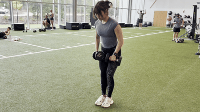
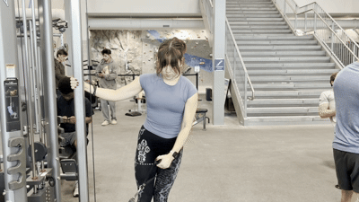

Dumbbell Lateral Raises
Equipment Needed

How To Do It
- Select your dumbbells and step into an open area, holding them at your sides with a neutral grip.
- Keeping a slight bend in your elbows, take a deep breath and raise the dumbbells out to the sides up to shoulder height.
- Slowly lower the dumbbells back to the starting position under control.
Cable Lateral Raises
Equipment Needed
- Cable machine
- Single-grip handle

How To Do It
- Set a pulley to the lowest position, attach a single-grip handle, and stand side-on to the machine.
- Grab the handle with your far hand so the cable runs across the front of your body.
- Keeping a slight bend in your elbow, raise your arm out to the side until it reaches shoulder height.
- Slowly lower the handle back to the starting position, then switch sides once you finish the set.
← Back to shoulders muscles
 Muscle
Muscle